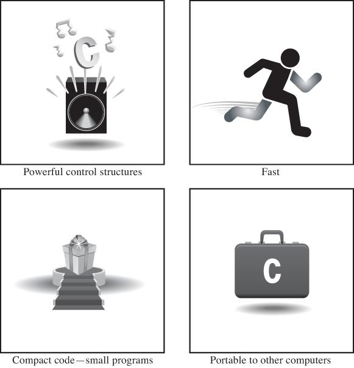
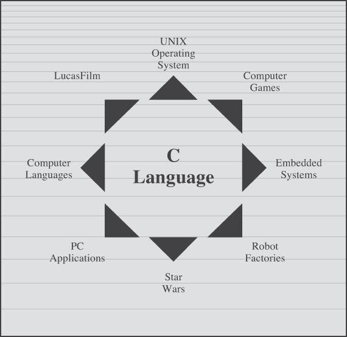
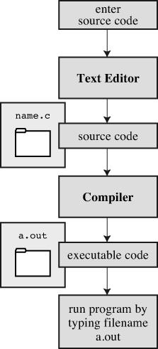

1. Getting Ready
You will learn about the following in this chapter:
C's history and features
The steps needed to write programs
A bit about compilers and linkers
C standards
Welcome to the world of C—a vigorous, professional programming language popular with amateur and commercial programmers alike. This chapter prepares you for learning and using this powerful and popular language, and it introduces you to the kinds of environments in which you will most likely develop your C-legs.
First, we look at C's origin and examine some of its features, both strengths and drawbacks. Then we look at the origins of programming and examine some general principles for programming. Finally, we discuss how to run C programs on some common systems.
Whence C?
Dennis Ritchie of Bell Labs created C in 1972 as he and Ken Thompson worked on designing the Unix operating system. C didn't spring full-grown from Ritchie's head, however. It came from Thompson's B language, which came from… but that's another story. The important point is that C was created as a tool for working programmers, so its chief goal is to be a useful language.
Most languages aim to be useful, but they often have other concerns. The main goal for Pascal, for instance, was to provide a sound basis for teaching good programming principles. BASIC, on the other hand, was developed to resemble English so that it could be learned easily by students unfamiliar with computers. These are important goals, but they are not always compatible with pragmatic, workaday usefulness. C's development as a language designed for programmers, however, has made it one of the modern-day languages of choice.
Why C?
During the past four decades, C has become one of the most important and popular programming languages. It has grown because people try it and like it. In the past decade or two, many have moved from C to languages such as C++, Objective C, and Java, but C is still an important language in its own right, as well a migration path to these others. As you learn C, you will recognize its many virtues (see Figure 1.1). Let's preview a few of them now.
 Figure 1.1 The virtues of C.
Design Features
C is a modern language incorporating the control features found desirable by the theory and practice of computer science. Its design makes it natural for top-down planning, structured programming, and modular design. The result is a more reliable, understandable program.
Efficiency
C is an efficient language. Its design takes advantage of the capabilities of current computers. C programs tend to be compact and to run quickly. In fact, C exhibits some of the fine control usually associated with an assembly language. (An assembly language is a mnemonic representation of the set of internal instructions used by a particular central processing unit design; different CPU families have different assembly languages.) If you choose, you can fine-tune your programs for maximum speed or most efficient use of memory.
Portability
C is a portable language, which means that C programs written on one system can be run on other systems with little or no modification. If modifications are necessary, they can often be made by simply changing a few entries in a header file accompanying the main program. Most languages are meant to be portable, but anyone who has converted an IBM PC BASIC program to Apple BASIC (and they were close cousins) or has tried to run an IBM mainframe FORTRAN program on a Unix system knows that porting is troublesome at best. C is a leader in portability. C compilers (programs that convert your C code into the instructions a computer uses internally) are available for many computer architectures, running from 8-bit microprocessors to Cray supercomputers. Note, however, that the portions of a program written specifically to access particular hardware devices, such as a display monitor, or special features of an operating system, such as Windows 8 or OS X, typically are not portable.
Because of C's close ties with Unix, Unix systems typically come with a C compiler as part of the package. Linux installations also usually include a C compiler. Several C compilers are available for personal computers, including PCs running various versions of Windows and Macintoshes. So whether you are using a home computer, a professional workstation, or a mainframe, the chances are good that you can get a C compiler for your particular system.
Power and Flexibility
C is powerful and flexible (two favorite words in computer literature). For example, most of the powerful, flexible Unix operating system was written in C. Many compilers and interpreters for other languages—such as FORTRAN, Perl, Python, Pascal, LISP, Logo, and BASIC—have been written in C. As a result, when you use FORTRAN on a Unix machine, ultimately a C program has done the work of producing the final executable program. C programs have been used for solving physics and engineering problems and even for animating special effects for movies.
Programmer Oriented
C is oriented to fulfill the needs of programmers. It gives you access to hardware, and it enables you to manipulate individual bits in memory. Its rich selection of operators allows you to express yourself succinctly. C is less strict than, say, Pascal or even C++ in limiting what you can do. This flexibility is both an advantage and a danger. The advantage is that many tasks, such as converting forms of data, are much simpler in C. The danger is that with C, you can make mistakes that are impossible in some languages. C gives you more freedom, but it also puts more responsibility on you.
Also, most C implementations have a large library of useful C functions. These functions deal with many needs that a programmer commonly faces.
Shortcomings
C does have some faults. Often, as with people, faults and virtues are opposite sides of the same feature. For example, we've mentioned that C's freedom of expression also requires added responsibility. C's use of pointers (something you can look forward to learning about in this book), in particular, means that you can make programming errors that are difficult to trace. As one computer preliterate once commented, the price of liberty is eternal vigilance.
C's conciseness, combined with its wealth of operators, make it possible to prepare code that is extremely difficult to follow. You aren't compelled to write obscure code, but the opportunity is there. After all, what other language has a yearly Obfuscated Code contest?
There are more virtues and, undoubtedly, a few more faults. Rather than delve further into the matter, let's move on to a new topic.
Whither C?
By the early 1980s, C was already a dominant language in the minicomputer world of Unix systems. Since then, it has spread to personal computers (microcomputers) and to mainframes (the big guys). See Figure 1.2. Many software houses use C as the preferred language for producing word processing programs, spreadsheets, compilers, and other products. These companies know that C produces compact and efficient programs. More important, they know that these programs will be easy to modify and easy to adapt to new models of computers.
 Figure 1.2 Where C is used.
What's good for companies and C veterans is good for other users, too. More and more computer users have turned to C to secure its advantages for themselves. You don't have to be a computer professional to use C.
In the 1990s, many software houses began turning to the C++ language for large programming projects. C++ grafts object-oriented programming tools to the C language. (Object-oriented programming is a philosophy that attempts to mold the language to fit a problem instead of molding the problem to fit the language.) C++ is nearly a superset of C, meaning that any C program is, or nearly is, a valid C++ program, too. By learning C, you also learn much of C++.
Despite the popularity of newer languages, such as C++ and Java, C remains a core skill in the software business, typically ranking in the top 10 of desired skills. In particular, C has become popular for programming embedded systems. That is, it's used to program the increasingly common microprocessors found in automobiles, cameras, DVD players, and other modern conveniences. Also, C has been making inroads in FORTRAN's long dominance of scientific programming. Finally, as befits a language created to develop an operating system, it plays a strong role in the development of Linux. Thus, the second decade of the twenty-first century finds C still going strong.
In short, C is one of the most important programming languages and will continue to be so. If you want a job writing software, one of the first questions you should be able to answer yes to is “Oh say, can you C?”
What Computers Do
Now that you are about to learn how to program in C, you probably should know a little about how computers work. This knowledge will help you understand the connection between writing a program in C and what eventually takes place when you run that program.
Modern computers have several components. The central processing unit, or CPU, does most of the computing work. The random access memory, or RAM, serves as a workspace to hold programs and files. The permanent memory storage device, typically a hard disk in the past, but now more and more often a solid-state device, remembers those programs and files, even while the computer is turned off. And various peripherals—such as the keyboard, mouse, touchscreen, and monitor—provide for communication between the computer and you. The CPU processes your programs; so let's concentrate on its role.
The life of a CPU, at least in this simplistic account, is quite simple. It fetches an instruction from memory and executes it. It fetches the next instruction from memory and executes it, and so on. (A gigahertz CPU can do this about a billion times a second, so the CPU can lead its boring life at a tremendous pace.) The CPU has its own small workspace, consisting of several registers, each of which can hold a number. One register holds the memory address of the next instruction, and the CPU uses this information to fetch the next instruction. After it fetches an instruction, the CPU stores the instruction in another register and updates the first register to the address of the next instruction. The CPU has a limited repertoire of instructions (known as the instruction set) that it understands. Also, these instructions are rather specific; many of them ask the computer to move a number from one location to another—for example, from a memory location to a register.
A couple interesting points go along with this account. First, everything stored in a computer is stored as a number. Numbers are stored as numbers. Characters, such as the alphabetical characters you use in a text document, are stored as numbers; each character has a numeric code. The instructions that a computer loads into its registers are stored as numbers; each instruction in the instruction set has a numeric code. Second, computer programs ultimately have to be expressed in this numeric instruction code, or what is called machine language.
One consequence of how computers work is that if you want a computer to do something, you have to feed a particular list of instructions (a program) telling it exactly what to do and how to do it. You have to create the program in a language that the computer understands directly (machine language). This is a detailed, tedious, exacting task. Something as simple as adding two numbers together would have to be broken down into several steps, perhaps something like the following:
1. Copy the number in memory location 2000 to register 1.
2. Copy the number in memory location 2004 to register 2.
3. Add the contents of register 2 to the contents of register 1, leaving the answer in register 1.
4. Copy the contents of register 1 to memory location 2008.
And you would have to represent each of these instructions with a numeric code!
If writing a program in this manner sounds like something you'd like to do, you'll be sad to learn that the golden age of machine-language programming is long past. But if you prefer something a little more enjoyable, open your heart to high-level programming languages.
High-level Computer Languages and Compilers
High-level programming languages, such as C, simplify your programming life in several ways. First, you don't have to express your instructions in a numeric code. Second, the instructions you use are much closer to how you might think about a problem than they are to the detailed approach a computer uses. Rather than worry about the precise steps a particular CPU would have to take to accomplish a particular task, you can express your desires on a more abstract level. To add two numbers, for example, you might write the following:
total = mine + yours;
Seeing code like this, you have a good idea what it does; looking at the machine-language equivalent of several instructions expressed in numeric code is much less enlightening.
Unfortunately, the opposite is true for a computer; to it, the high-level instruction is incomprehensible gibberish. This is where compilers enter the picture. The compiler is a program that translates the high-level language program into the detailed set of machine language instructions the computer requires. You do the high-level thinking; the compiler takes care of the tedious details.
The compiler approach has another benefit. In general, each computer design has its own unique machine language; so a program written in the machine language for, say, an Intel Core i7 CPU means nothing to an ARM Cortex-A57 CPU. But you can match a compiler to a particular machine language. Therefore, with the right compiler or set of compilers, you can convert the same high-level language program to a variety of different machine-language programs. You solve a programming problem once, and then you let your compilers translate the solution to a variety of machine languages.
In short, high-level languages—such as C, Java, and Pascal—describe actions in a more abstract form and aren't tied to a particular CPU or instruction set. Also, high-level languages are easier to learn and much easier to program in than are machine languages.
Advances in Computing
In 1964, Control Data Corporation announced the CDC 6600 computer. This room-filling machine is considered to be the first supercomputer, and it had a starting price of about $6 million. It was the computer of choice for high-energy nuclear physics research. A modern smartphone is several hundred times as capable in terms of computing power and memory. It can show videos and play music, too. And it's a phone.
In 1964, FORTRAN was the dominant programming language, at least in engineering and science. Programming languages haven't evolved quite as dramatically as the hardware on which they run. Nonetheless, the world of programming languages has changed. Languages have provided more support first for structured programming, then for object-oriented programming as part of the struggle to cope with larger and larger programming projects. Not only have new languages come along, but existing languages have changed with the times.
Language Standards
Currently, many C implementations are available. Ideally, when you write a C program, it should work the same on any implementation, providing it doesn't use machine-specific programming. For this to be true in practice, different implementations need to conform to a recognized standard.
At first, there was no official standard for C. Instead, the first edition of The C Programming Language by Brian Kernighan and Dennis Ritchie (1978) became the accepted standard, usually referred to as K&R C or Classic C. In particular, the “C Reference Manual” in that book's appendix acted as the guide to C implementations. Compilers, for example, would claim to offer a full K&R implementation. However, although this appendix defined the C language, it did not define the C library. More than most languages, C depends on its library, so there is need for a library standard, too. In the absence of any official standard, the library supplied with the Unix implementation became a de facto standard.
The First ANSI/ISO C Standard
As C evolved and became more widely used on a greater variety of systems, the C community realized it needed a more comprehensive, up-to-date, and rigorous standard. To meet this need, the American National Standards Institute (ANSI) established a committee (X3J11) in 1983 to develop a new standard, which was adopted formally in 1989. This standard (ANSI C) defined both the language and a standard C library. The International Organization for Standardization adopted a C standard (ISO C) in 1990. ISO C and ANSI C are essentially the same standard. The final version of the ANSI/ISO standard is often referred to as C89 (because that's when ANSI approval came) or C90 (because that's when ISO approval came). Also, because the ANSI version came out first, people often used the term ANSI C.
The committee had several guiding principles. Perhaps the most interesting was this: Keep the spirit of C. The committee listed the following ideas as expressing part of that spirit:
Trust the programmer.
Don't prevent the programmer from doing what needs to be done.
Keep the language small and simple.
Provide only one way to do an operation.
Make it fast, even if it is not guaranteed to be portable.
By the last point, the committee meant that an implementation should define a particular operation in terms of what works best for the target computer instead of trying to impose an abstract, uniform definition. You'll encounter examples of this philosophy as you learn the language.
The C99 Standard
In 1994, a joint ANSI/ISO committee, known then as the C9X committee, began revising the standard, an effort that resulted in the C99 standard. The committee endorsed the original principles of the C90 standard, including keeping the language small and simple. The committee's intent was not to add new features to the language except as needed to meet the new goals. One of these main goals was to support international programming by, for example, providing ways to deal with international character sets. A second goal was to “codify existing practice to address evident deficiencies.” Thus, when meeting the need of moving C to 64-bit processors, the committee based the additions to the standard on the experiences of those who dealt with this problem in real life. A third goal was to improve the suitability of C for doing critical numeric calculations for scientific and engineering projects, making C a more appealing alternative to FORTRAN.
These three points—internationalization, correction of deficiencies, and improvement of computational usefulness—were the main change-oriented goals. The remaining plans for change were more conservative in nature—for example, minimizing incompatibilities with C90 and with C++ and keeping the language conceptually simple. In the committee's words, “…the committee is content to let C++ be the big and ambitious language.”
The upshot is that C99 changes preserve the essential nature of C, and C remains a lean, clean, efficient language. This book points out many of the C99 changes. However, although the standard has been out for a while, not all compilers at this time fully implement all the C99 changes. You may find that some of them are not available on your system. Or you may find that some C99 features are available only if you alter the compiler settings.
The C11 Standard
Maintaining a standard is a perpetual process, and in 2007 the Standards Committee committed to the next revision, C1X, which became realized as C11. The committee raised some new guiding principles. One was that the “trust the programmer” goal should be tempered somewhat in the face of contemporary concerns of programming security and safety. The committee also made some important observations. One was that C99 hasn't been as well received and supported by vendors as C90 was. As a consequence, some features of C99 became optional for C11. One reason is that the committee felt that vendors serving the small machine market shouldn't be required to support features not used in their targeted environments. Another observation was that the standard was being revised not because it was broken but because there was a need to track new technologies. One example of this is the addition of optional support for concurrent programming in response to the trend of using multiple processors in computers. We look briefly at this topic, but exploring it is beyond the scope of this book.
Note
This book will use the terms ANSI C or, in a more international spirit, ANSI//ISO C/ or just ISO C to mean features common to C89/90 and later standards, and C99 and C11 to refer to new features. Occasionally, it will refer to C90 (for example, when discussing when a feature was first added to C).
Using C: Seven Steps
C, as you've seen, is a compiled language. If you are accustomed to using a compiled language, such as Pascal or FORTRAN, you will be familiar with the basic steps in putting together a C program. However, if your background is in an interpreted language, such as BASIC, or in a graphical interface–oriented language, such as Visual Basic, or if you have no background at all, you need to learn how to compile. We'll look at that process soon, and you'll see that it is straightforward and sensible. First, to give you an overview of programming, let's break down the act of writing a C program into seven steps (see Figure 1.3). Note that this is an idealization. In practice, particularly for larger projects, you would go back and forth, using what you learned at a later step to refine an earlier step.
Figure 1.3 The seven steps of programming.
Step 1: Define the Program Objectives
Naturally enough, you should start with a clear idea of what you want the program to do. Think in terms of the information your program needs, the feats of calculation and manipulation the program needs to do, and the information the program should report back to you. At this level of planning, you should be thinking in general terms, not in terms of some specific computer language.
Step 2: Design the Program
After you have a conceptual picture of what your program ought to do, you should decide how the program will go about it. What should the user interface be like? How should the program be organized? Who will the target user be? How much time do you have to complete the program?
You also need to decide how to represent the data in the program and, possibly, in auxiliary files, as well as which methods to use to process the data. When you first learn programming in C, the choices will be simple, but as you deal with more complex situations, you'll find that these decisions require more thought. Choosing a good way to represent the information can often make designing the program and processing the data much easier.
Again, you should be thinking in general terms, not about specific code, but some of your decisions may be based on general characteristics of the language. For example, a C programmer has more options in data representation than, say, a Pascal programmer.
Step 3: Write the Code
Now that you have a clear design for your program, you can begin to implement it by writing the code. That is, you translate your program design into the C language. Here is where you really have to put your knowledge of C to work. You can sketch your ideas on paper, but eventually you have to get your code into the computer. The mechanics of this process depend on your programming environment. We'll present the details for some common environments soon. In general, you use a text editor to create what is called a source code file. This file contains the C rendition of your program design. Listing 1.1 shows an example of C source code.
Listing 1.1 Example of C Source Code
#include <stdio.h> int main(void) { int dogs;
printf("How many dogs do you have?n"); scanf("%d", &dogs); printf("So you have %d dog(s)!n", dogs);
return 0; }
As part of this step, you should document your work. The simplest way is to use C's comment facility to incorporate explanations into your source code. Chapter 2, “Introducing C,” will explain more about using comments in your code.
Step 4: Compile
The next step is to compile the source code. Again, the details depend on your programming environment, and we'll look at some common environments shortly. For now, let's start with a more conceptual view of what happens.
Recall that the compiler is a program whose job is to convert source code into executable code. Executable code is code in the native language, or machine language, of your computer. This language consists of detailed instructions expressed in a numeric code. As you read earlier, different computers have different machine languages, and a C compiler translates C into a particular machine language. C compilers also incorporate code from C libraries into the final program; the libraries contain a fund of standard routines, such as printf() and scanf(), for your use. (More accurately, a program called a linker brings in the library routines, but the compiler runs the linker for you on most systems.) The end result is an executable file containing code that the computer understands and that you can run.
The compiler also checks that your program is valid C. If the compiler finds errors, it reports them to you and doesn't produce an executable file. Understanding a particular compiler's complaints is another skill you will pick up.
Step 5: Run the Program
Traditionally, the executable file is a program you can run. To run the program in many common environments, including Windows Command-Prompt mode, Unix terminal mode, and Linux terminal mode, just type the name of the executable file. Other environments, such as VMS on a VAX, might require a run command or some other mechanism. Integrated development environments (IDEs), such as those provided for Windows and Macintosh environments, allow you to edit and execute your C program from within the IDE by selecting choices from a menu or by pressing special keys. The resulting program also can be run directly from the operating system by clicking or double-clicking the filename or icon.
Step 6: Test and Debug the Program
The fact that your program runs is a good sign, but it's possible that it could run incorrectly. Consequently, you should check to see that your program does what it is supposed to do. You'll find that some of your programs have mistakes—bugs, in computer jargon. Debugging is the process of finding and fixing program errors. Making mistakes is a natural part of learning. It seems inherent to programming, so when you combine learning and programming, you had best prepare yourself to be reminded often of your fallibility. As you become a more powerful and subtle programmer, your errors, too, will become more powerful and subtle.
You have many opportunities to err. You can make a basic design error. You can implement good ideas incorrectly. You can overlook unexpected input that messes up your program. You can use C incorrectly. You can make typing errors. You can put parentheses in the wrong place, and so on. You'll find your own items to add to this list.
Fortunately, the situation isn't hopeless, although there might be times when you think it is. The compiler catches many kinds of errors, and there are things you can do to help yourself track down the ones that the compiler doesn't catch. This book will give you debugging advice as you go along.
Step 7: Maintain and Modify the Program
When you create a program for yourself or for someone else, that program could see extensive use. If it does, you'll probably find reasons to make changes in it. Perhaps there is a minor bug that shows up only when someone enters a name beginning with Zz, or you might think of a better way to do something in the program. You could add a clever new feature. You might adapt the program so that it runs on a different computer system. All these tasks are greatly simplified if you document the program clearly and if you follow sound design practices.
Commentary
Programming is not usually as linear as the process just described. Sometimes you have to go back and forth between steps. For instance, when you are writing code, you might find that your plan was impractical. You may see a better way of doing things or, after you see how a program runs, you might feel motivated to change the design. Documenting your work helps you move back and forth between levels.
Most learners tend to neglect steps 1 and 2 (defining program objectives and designing the program) and go directly to step 3 (writing the program). The first programs you write are simple enough that you can visualize the whole process in your head. If you make a mistake, it's easy to find. As your programs grow longer and more complex, mental visualizations begin to fail, and errors get harder to find. Eventually, those who neglect the planning steps are condemned to hours of lost time, confusion, and frustration as they produce ugly, dysfunctional, and abstruse programs. The larger and more complex the job is, the more planning it requires.
The moral here is that you should develop the habit of planning before coding. Use the ancient but honorable pen-and-pencil technology to jot down the objectives of your program and to outline the design. If you do so, you eventually will reap substantial dividends in time saved and satisfaction gained.
Programming Mechanics
The exact steps you must follow to produce a program depend on your computer environment. Because C is portable, it's available in many environments, including Unix, Linux, MS-DOS (yes, some people still use it), Windows, and Macintosh OS. There's not enough space in this book to cover all environments, particularly because particular products evolve, die, and are replaced.
First, however, let's look at some aspects shared by many C environments, including the five we just mentioned. You don't really need to know what follows to run a C program, but it is good background. It can also help you understand why you have to go through some particular steps to get a C program.
When you write a program in the C language, you store what you write in a text file called a source code file. Most C systems, including the ones we mentioned, require that the name of the file end in .c (for example, wordcount.c and budget.c). The part of the name before the period is called the basename, and the part after the period is called the extension. Therefore, budget is a basename and c is the extension. The combination budget.c is the filename. The name should also satisfy the requirements of the particular computer operating system. For example, MS-DOS is an older operating system for IBM PCs and clones. It requires that the basename be no more than eight characters long, so the wordcount.c filename mentioned earlier would not be a valid DOS filename. Some Unix systems place a 14-character limit on the whole name, including the extension; other Unix systems allow longer names, up to 255 characters. Linux, Windows, and Macintosh OS also allow long names.
So that we'll have something concrete to refer to, let's assume we have a source file called concrete.c containing the C source code in Listing 1.2.
Listing 1.2 The concrete.c Program
#include <stdio.h> int main(void) { printf("Concrete contains gravel and cement.n");
return 0; }
Don't worry about the details of the source code file shown in Listing 1.2; you'll learn about them in Chapter 2.
Object Code Files, Executable Files, and Libraries
The basic strategy in C programming is to use programs that convert your source code file to an executable file, which is a file containing ready-to-run machine language code. C implementations typically do this in two steps: compiling and linking. The compiler converts your source code to an intermediate code, and the linker combines this with other code to produce the executable file. C uses this two-part approach to facilitate the modularization of programs. You can compile individual modules separately and then use the linker to combine the compiled modules later. That way, if you need to change one module, you don't have to recompile the other ones. Also, the linker combines your program with precompiled library code.
There are several choices for the form of the intermediate files. The most prevalent choice, and the one taken by the implementations described here, is to convert the source code to machine language code, placing the result in an object code file, or object file for short. (This assumes that your source code consists of a single file.) Although the object file contains machine language code, it is not ready to run. The object file contains the translation of your source code, but it is not yet a complete program.
The first element missing from the object code file is something called startup code, which is code that acts as an interface between your program and the operating system. For example, you can run an IBM PC compatible under MS Windows or under Linux. The hardware is the same in either case, so the same object code would work with both, but you would need different startup code for Windows than you would for Linux because these systems handle programs differently from one another.
The second missing element is the code for library routines. Nearly all C programs make use of routines (called functions) that are part of the standard C library. For example, concrete.c uses the function printf(). The object code file does not contain the code for this function; it merely contains instructions saying to use the printf() function. The actual code is stored in another file, called a library. A library file contains object code for many functions.
The role of the linker is to bring together these three elements—your object code, the standard startup code for your system, and the library code—and put them together into a single file, the executable file. For library code, the linker extracts only the code needed for the functions you use from the library (see Figure 1.4).
Figure 1.4 Compiler and linker.
In short, an object file and an executable file both consist of machine language instructions. However, the object file contains the machine language translation only for the code you used, but the executable file also has machine code for the library routines you use and for the startup code.
On some systems, you must run the compile and link programs separately. On other systems, the compiler starts the linker automatically, so you have to give only the compile command.
Now let's look at some specific systems.
Unix System
Because C's popularity and existence began on Unix systems, we will start there. (Note: By “Unix,” we include systems such as FreeBSD, which descends from Unix but can't use the name for legal reasons.)
-
Editing on a Unix System
Unix C does not have its own editor. Instead, you use one of the general-purpose Unix editors, such as emacs, jove, vi, or an X Window System text editor.
Your two main responsibilities are typing the program correctly and choosing a name for the file that will store the program. As discussed, the name should end with
.c. Note that Unix distinguishes between uppercase and lowercase. Therefore,budget.c,BUDGET.c, andBudget.care three distinct and valid names for C source files, butBUDGET.Cis not a valid name because it uses an uppercaseCinstead of a lowercasec.Using the vi editor, we prepared the following program and stored it in a file called
inform.c.#include <stdio.h> int main(void) { printf("A .c is used to end a C program filename.n");
return 0; }
This text is the source code, and
inform.cis the source file. The important point here is that the source file is the beginning of a process, not the end. -
Compiling on a Unix System
Our program, although undeniably brilliant, is still gibberish to a computer. A computer doesn't understand things such as
#includeandprintf. (At this point, you probably don't either, but you will soon learn, whereas the computer won't.) As we discussed earlier, we need the help of a compiler to translate our code (source code) to the computer's code (machine code). The result of these efforts will be the executable file, which contains all the machine code that the computer needs to get the job done.Historically, the Unix C compiler, invoked with the
cccommand, defined the language. But it didn't keep pace with the developing standard, and it has been retired. However, Unix systems typically provide a C compiler from some other source, and then make thecccommand an alias for that compiler. So you still can proceed with the same command, even though it may invoke different compilers on different systems.To compile the
inform.cprogram, type the following:cc inform.c
After a moment, the Unix prompt will return, telling you that the deed is done. You might get warnings and error messages if you failed to write the program properly, but let's assume you did everything right. (If the compiler complains about the word
void, your system has not yet updated to an ANSI C compiler. We'll talk more about standards soon. Meanwhile, just delete the wordvoidfrom the example.) If you use thelscommand to list your files, you will find that there is a new file calleda.out(see Figure 1.5). This is the executable file containing the translation (or compilation) of the program. To run it, just type Figure 1.5 Preparing a C program using Unix.
a.out
and wisdom pours forth:
A .c is used to end a C program filename.
If you want to keep the executable file (
a.out), you should rename it. Otherwise, the file is replaced by a newa.outthe next time you compile a program.What about the object code? The cc compiler creates an object code file having the same basename as the source code, but with an
.oextension. In our example, the object code file is calledinform.o, but you won't find it, because the linker removes it once the executable program has been completed. However, if the original program used more than one source code file, the object code files would be saved. When we discuss multiple-file programs later in the text, you will see that this is a fine idea.
The GNU Compiler Collection and the LLVM Project
The GNU Project, dating from 1987, is a mass collaboration that has developed a large body of free Unix-like software. (GNU stands for “GNU's Not Unix.”) One of its products is the GNU Compiler Collection, or GCC, which includes the GCC C compiler. GCC is under constant development, guided by a steering committee, and its C compiler closely tracks changing C standards. Versions of GCC are available for a wide variety of hardware platforms and operating systems, including Unix, Linux, and Windows. The GCC C compiler can be invoked with the gcc command. And many systems using gcc will make cc an alias for gcc.
The LLVM Project provides a second replacement for cc. The project is an open-source collection of compiler-related software dating from a 2000 research project at the University of Illinois. Its Clang compiler processes C code and can be invoked as clang. Available on several platforms, including Linux, Clang became the default C compiler for FreeBSD in late 2012. Like GCC, Clang tracks the C standard pretty well.
Both accept a -v option for version information, so on systems using the cc alias for either the gcc or clang command, the combination
cc -v
shows which compiler and which version you are using.
Both gcc and clang commands, depending on the version, may require run-time options to invoke more recent C standards:
gcc -std=c99 inform.c gcc -std=c1x inform.c gcc -std=c11 inform.c
The first example invokes the C99 standard, the second invokes the draft C11 standard for GCC versions prior to the acceptance of the standard, and the third invokes the C11 standard for GCC versions that followed the acceptance. The Clang compiler uses the same flags.
Linux Systems
Linux is a popular open-source, Unix-like operating system that runs on a variety of platforms, including PCs and Macs. Preparing C programs on Linux is much the same as for Unix systems, except that you would use the GCC public domain C compiler that's provided by GNU. The compile command looks like this:
gcc inform.c
Note that installing GCC may be optional when installing Linux, so you (or someone) might have to install GCC if it wasn't installed earlier. Typically, the installation makes cc an alias for gcc, so you can use cc in the command line instead of gcc if you like.
You can obtain further information about GCC, including information about new releases at http://www.gnu.org/software/gcc/index.html.
Command-Line Compilers for the PC
C compilers are not part of the standard Windows package, so you may need to obtain and install a C compiler. Cygwin and MinGW are free downloads that make the GCC compiler available for command-line use on a PC. Cygwin runs in its own window, which has a Command-Prompt look but which imitates a Linux command-line environment. MinGW, on the other hand runs in the Windows Command-Prompt mode. These come with the newest (or near-newest) version of GCC, which supports C99 and at least some of C11. The Borland C++ Compiler 5.5 is another free download; it supports C90.
Source code files should be text files, not word processor files. (Word processor files contain a lot of additional information about fonts and formatting.) You should use a text editor, such as Windows Notepad. You can use a word processor if you use the Save As feature to save the file in text mode. The file should have a .c extension. Some word processors automatically add a .txt extension to text files. If this happens to you, you need to change the filename, replacing txt with c.
C compilers for the PC typically, but not always, produce intermediate object code files having an .obj extension. Unlike Unix compilers, these compilers typically don't remove these files when done. Some compilers produce assembly language files with .asm extensions or use some special format of their own.
Some compilers run the linker automatically after compiling; others might require that you run the linker manually. Linking results in the executable file, which appends the .EXE extension to the original source code basename. For example, compiling and linking a source code file called concrete.c produces a file called concrete.exe. You can run the program by typing the basename at the command line:
C>concrete
Integrated Development Environments (Windows)
Quite a few vendors, including Microsoft, Embarcadero, and Digital Mars, offer Windows-based integrated development environments, or IDEs. (These days, most are combined C and C++ compilers.) Free downloads include Microsoft Visual Studio Express and Pelles C. All have fast, integrated environments for putting together C programs. The key point is that each of these programs has a built-in editor you can use to write a C program. Each provides menus that enable you to name and save your source code file, as well as menus that allow you to compile and run your program without leaving the IDE. Each dumps you back into the editor if the compiler finds any errors, and each identifies the offending lines and matches them to the appropriate error messages.
The Windows IDEs can be a little intimidating at first because they offer a variety of targets—that is, a variety of environments in which the program will be used. For example, they might give you a choice of 32-bit Windows programs, 64-bit Windows programs, dynamic link library files (DLLs), and so on. Many of the targets involve bringing in support for the Windows graphical interface. To manage these (and other) choices, you typically create a project to which you then add the names of the source code files you'll be using. The precise steps depend on the product you use. Typically, you first use the File menu or Project menu to create a project. What's important is choosing the correct form of project. The examples in this book are generic examples designed to run in a simple command-line environment. The various Windows IDEs provide one or more choices to match this undemanding assumption. Microsoft Visual Studio, for example, offers the Win32 Console Application option. For other systems, look for an option using terms such as DOS EXE, Console, or Character Mode executable. These modes will run your executable program in a console-like window. After you have the correct project type, use the IDE menu to open a new source code file. For most products, you can do this by using the File menu. You may have to take additional steps to add the source file to the project.
Because the Windows IDEs typically handle both C and C++, you need to indicate that you want a C program. With some products you use the project type to indicate that you want to use C. With other products, such as Microsoft Visual C++, you use the .c file extension to indicate that you want to use C rather than C++. However, most C programs also work as C++ programs. Reference Section IX, “Differences Between C and C++,” compares C and C++.
One problem you might encounter is that the window showing the program execution vanishes when the program terminates. If that is the case for you, you can make the program pause until you press the Enter key. To do that, add the following line to the end of the program, just before the return statement:
getchar();
This line reads a keystroke, so the program will pause until you press the Enter key. Sometimes, depending on how the program functions, there might already be a keystroke waiting. In that case, you'll have to use getchar() twice:
getchar(); getchar();
For example, if the last thing the program did was ask you to enter your weight, you would have typed your weight and then pressed the Enter key to enter the data. The program would read the weight, the first getchar() would read the Enter key, and the second getchar() would cause the program to pause until you press Enter again. If this doesn't make a lot of sense to you now, it will after you learn more about C input. And we'll remind you later about this approach.
Although the various IDEs have many broad principles in common, the details vary from product to product and, within a product line, from version to version. You'll have to do some experimenting to learn how your compiler works. You might even have to read the manual or try an online tutorial.
Microsoft Visual Studio and the C Standard
Microsoft Visual Studio and the freeware Microsoft Visual Studio Express have the greatest presence in Windows software development, so their relationship to the C standards is of some importance. In brief, Microsoft has encouraged programmers to shift from C to C++ or C#. Visual Studio supports C89/90, but its support for later standards, to date, consists of supporting those new features that also are found in C++, such as the long long type. Also, as of the 2012 edition, Visual Studio doesn't offer C as one of the choices for project type. However, you can still use Visual Studio with the vast majority of programs in this book. One choice is just to choose the C++ option, then Win32 Console, then Empty Project in Application settings. Nearly all of C is compatible with C++, so most of the C programs in this book also work as C++ programs. Or, after choosing the C++ option, you can use the .c extension instead of the default .cpp extension for the source file, and the compiler will use C rules instead of C++ rules.
The Windows/Linux Option
Many Linux distributions can be installed from Windows to set up a dual-boot system. Some of your storage will be set aside for a Linux system, and you then can boot to either Windows or Linux. You can't run a Linux program from Windows or vice versa, and you can't access Linux files from Windows, but you can access Windows documents from Linux.
C on the Macintosh
Currently, Apple offers its Xcode development system as a free download. (In the past, sometimes it has been free, sometimes available for a modest charge.) It lets you choose from several programming languages, including C.
Xcode, with its capability to handle several programming languages, to target multiple platforms, and to develop large-scale projects, can seem intimidating. But you need learn just enough to produce simple C programs. With Xcode 4.6, use the File menu to select New, Project, OS X Application Command Line Tool, and then enter a product name and select C for the Type. Xcode uses either the Clang or the GCC C compiler for C code. It used to use GCC by default, and now uses Clang by default. You can use Xcode settings to choose which compiler it uses and also which C standard to support. (Due to licensing matters, the version of Clang available with Xcode is more recent than the GCC version.)
Mac OS X is built on Unix, and the Terminal utility opens a window that lets you run programs in a Unix command-line environment. Apple doesn't provide a command-line compiler as part of its standard package, but if you download Xcode, you can also download optional command-line tools that enable you to use the clang and the gcc commands to compile in command-line mode.
How This Book Is Organized
There are many ways to organize information. One of the most direct approaches is to present everything about topic A, everything about topic B, and so on. This is particularly useful for a reference so you can find all the information about a given topic in one place. But usually it's not the best sequence for learning a subject. For instance, if you began learning English by first learning all the nouns, your ability to express ideas would be severely limited. Sure, you could point to objects and shout their names, but you'd be much better equipped to express yourself if you learned just a few nouns, verbs, adjectives, and so on, along with a few rules about how those parts relate to one another.
To provide you with a more balanced intake of information, this book uses a spiral approach of introducing several topics in earlier chapters and returning later to discuss them more fully. For example, understanding functions is essential to understanding C. Consequently, several of the early chapters include some discussion of functions so that when you reach the full discussion in Chapter 9, “Functions,” you'll already have achieved some ease about using functions. Similarly, early chapters preview strings and loops so that you can begin using these useful tools in your programs before learning about them in detail.
Conventions Used in This Book
We are almost ready to begin studying the C language itself. This section covers some of the conventions we use in presenting material.
Typeface
For text representing programs and computer input and output, we use a type font that resembles what you might see on a screen or on printed output. We have already used it a few times. In case it slipped your notice, the font looks like the following:
#include <stdio.h> int main(void) { printf("Concrete contains gravel and cement.n");
return 0; }
The same monospace type is for code-related terms used in the text, such as main(), and for filenames, such as stdio.h. The book uses italicized monospace for placeholder terms for which you are expected to substitute specific terms, as in the following model of a declaration:
typename variablename;
Here, for instance, you might replace typename with int and variablename with =zebracoun=t.
Program Output
Output from the computer is printed in the same format, with the exception that user input is shown in boldface type. For instance, the following is program output from an example in Chapter 14, “Structures and Other Data Forms”:
Please enter the book title. Press [enter] at the start of a line to stop.
My Life as a Budgie Now enter the author.
Mack Zackles
The lines printed in normal computer font are program output, and the boldface line is user input.
There are many ways you and a computer can communicate with each other. However, we will assume that you type in commands by using a keyboard and that you read the response on a screen.
-
Special Keystrokes
Usually, you send a line of instructions by pressing a key labeled Enter, c/r, Return, or some variation of these. We refer to this key in the text as the Enter key. Normally, the book takes it for granted that you press the Enter key at the end of each line of input. However, to clarify particular points, a few examples explicitly show the Enter key, using the symbol
[enter]to represent it. The brackets mean that you press a single key rather than type the word enter.We also refer to control characters, such as Ctrl+D. This notation means to press the D key while you are pressing the key labeled Ctrl (or perhaps Control).
-
Systems Used in Preparing This Book
Some aspects of C, such as the amount of space used to store a number, depend on the system. When we give examples and refer to “our system,” we usually speak of an iMac running under OS X 10.8.4 and using the Xcode 4.6.2 development system with the Clang 3.2 compiler. Most of the programs also have been compiled using Microsoft Visual Studio Express 2012 and Pelles C 7.0 on a Windows 7 system, and GCC 4.7.3 on an Ubuntu 13.04 Linux system.
You can download the code for this book's examples if you register the book at www.informit.com/register.
-
Your System—What You Need
You need to have a C compiler or access to one. C runs on an enormous variety of computer systems, so you have many choices. Do make sure that you use a C compiler designed for your particular system. Some of the examples in this book require support for the C99 or C11 standards, but most of the examples will work with a C90 compiler. If the compiler you use is pre-ANSI/ISO, you will have to make adjustments, probably often enough to encourage you to seek something newer.
Most compiler vendors offer special pricing to students and educators, so if you fall into that category, check the vendor websites.
Special Elements
The book includes several special elements that highlight particular points: Sidebars, Tips, Cautions, and Notes. The following illustrates their appearances and uses:
Sidebar
A sidebar provides a deeper discussion or additional background to help illuminate a topic.
Tip
Tips present short, helpful guides to particular programming situations.
Caution
A caution alerts you to potential pitfalls.
Note
The notes provide a catchall category for comments that don't fall into one of the other categories.
Summary
C is a powerful, concise programming language. It is popular because it offers useful programming tools, good control over hardware, and because C programs are easier than most to transport from one system to another.
C is a compiled language. C compilers and linkers are programs that convert C language source code into executable code.
Programming in C can be taxing, difficult, and frustrating, but it can also be intriguing, exciting, and satisfying. We hope you find it as enjoyable and fascinating as we do.
Review Questions
You'll find answers to the review questions in Appendix A, “Answers to the Review Questions.”
1. What does portability mean in the context of programming?
2. Explain the difference between a source code file, object code file, and executable file.
3. What are the seven major steps in programming?
4. What does a compiler do?
5. What does a linker do?
Programming Exercise
We don't expect you to write C code yet, so this exercise concentrates on the earlier stages of the programming process.
1. You have just been employed by MacroMuscle, Inc. (Software for Hard Bodies). The company is entering the European market and wants a program that converts inches to centimeters (1 inch = 2.54 cm). The company wants the program set up so that it prompts the user to enter an inch value. Your assignment is to define the program objectives and to design the program (steps 1 and 2 of the programming process). on an Ubuntu 13.04 Linux system.
You can download the code for this book's examples if you register the book at www.informit.com/register.
Your System—What You Need
You need to have a C compiler or access to one. C runs on an enormous variety of computer systems, so you have many choices. Do make sure that you use a C compiler designed for your particular system. Some of the examples in this book require support for the C99 or C11 standards, but most of the examples will work with a C90 compiler. If the compiler you use is pre-ANSI/ISO, you will have to make adjustments, probably often enough to encourage you to seek something newer.
Most compiler vendors offer special pricing to students and educators, so if you fall into that category, check the vendor websites.
Special Elements
The book includes several special elements that highlight particular points: Sidebars, Tips, Cautions, and Notes. The following illustrates their appearances and uses:
Sidebar
A sidebar provides a deeper discussion or additional background to help illuminate a topic.
Tip
Tips present short, helpful guides to particular programming situations.
Caution
A caution alerts you to potential pitfalls.
Note
The notes provide a catchall category for comments that don't fall into one of the other categories.